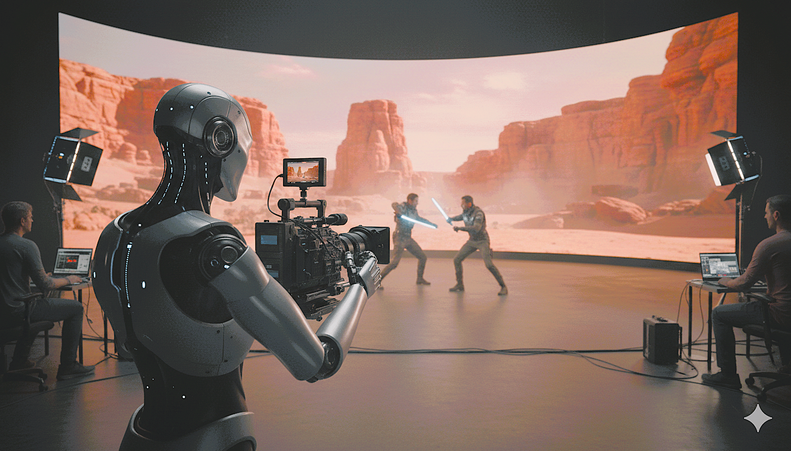

Real-time Adaptive Virtual-Twin Environment for Next-Generation Robotics in Virtual Production
Train, validate, and deploy robotic camera ops directly from Unreal Engine 5.
LED/XR stages deliver real-time pixels, but the physical layer — camera placement, lighting pose, practical FX — still relies on manual rigging and rehearsals that slow iteration and add safety overhead.
RAVEN closes this gap.
RAVEN makes Unreal Engine 5 the place where robotic crew are trained, validated, and deployed. The system embeds a live digital twin of the stage in UE5 and connects it to the Robot Operating System 2 (ROS 2), so a humanoid robot can perform camera operation — and later lighting/FX — with frame-accurate timing, low latency, and predictive safety.
Directors and DPs can author, preview, and replay robotic camera moves entirely inside UE5, with visible safety zones and timing aligned to LED scanout and camera shutter.

RAVEN Concept — Image generated by Nano Banana
QoS-tuned streams and PTP time-sync for seamless real-time communication between Unreal Engine and robotic systems.
Model predictive control combined with learned policies that respect framing, horizon, and visual continuity.
Speed-and-Separation Monitoring with keep-out volumes rendered in UE5 for real-time human-robot safety.
Meta Quest integration lets creatives set paths, scrub takes, and validate safety before physical execution.
SCAR (Studio-Centric Autonomous Robot) coordinates ceiling-mounted lighting/FX on the same timeline for co-authored camera + lighting cues.
Command-to-camera-pose latency (p95)
Pose-to-render latency (p95)
Safe-stop activation on SSM breach
Reduction in setup & re-take time